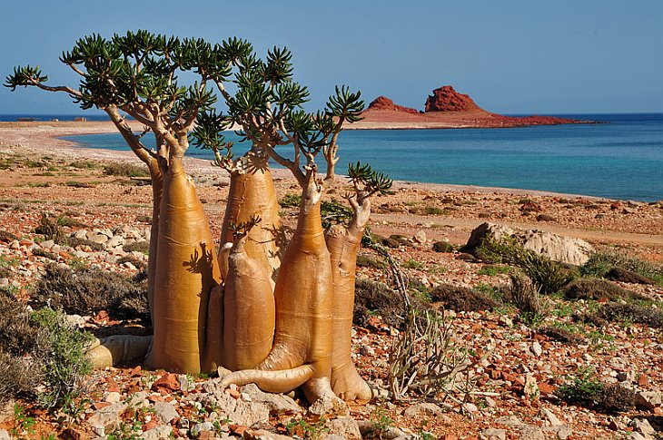

|  | Остров СокортаПрекрасная буйная природа, сохранившаяся еще с самых древних времен, величественные горы, водопады и пещеры привлекают сюда ученых и натуралистов, и, конечно же, любителей релакса и чистой природы. Наше путешествие по Йемену началось с острова Сокотра. Много миллионов лет назад остров откололся от материка и это событие сохранило уникальную природу острова, законсервировав от внешнего воздействия флору и фауну. На самом острове начинает казаться, что он откололся вовсе не от материка, а от другой планеты, — настолько то, что ты видишь, часто не похоже на привычные земные ландшафты. |